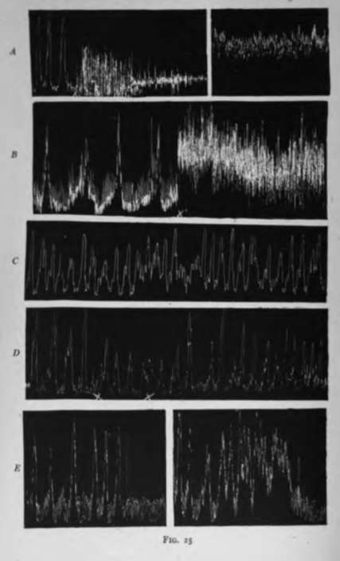

2. Results On Dogs
Description
This section is from the book "The Control Of Hunger In Health And Disease", by Anton Julius Carlson. Also available from Amazon: The Control of Hunger in Health and Disease.
2. Results On Dogs
1. Effects Of Running In Treadmill
The initial effect on gastric tonus and hunger contractions of running in the mill is always in the direction of inhibition-usually complete inhibition-and if the dog is started running in the midst of a period of gastric quiescence there is no evidence of increased gastric tonus or beginning of hunger contractions. If the dog is made to run at high speed the inhibition persists during the entire period, even if the running is kept up for one or two hours. When the dogs ran at rather high speed for an hour or more the gastric inhibition usually persisted from 20 to 40 minutes after the dog stopped running. The return of gastric tonus and hunger contractions in such cases is very gradual. But frequently when the gastric tonus finally recovered after a running period it was higher than before the dogs began to run. Thus a dog showing type I or II of hunger contractions when he started to run in the mill showed an increased tonus and type III of hunger contractions 30 minutes after he stopped running, while the running period itself was accompanied by complete gastric inhibition. If the dog runs only moderately fast in the mill the gastric tonus and hunger contractions reappear during the running period, or come on during the running, in case the dog is started when the empty stomach is quiescent.
These facts indicate that the carnivorous animal in pursuit of its prey must be urged on by something else than the pangs of hunger, as these are inhibited by the chase. Brisk walking or running leads also to inhibition of the digestion movements of the stomach, according to the observations of Cohn on dogs, Bender on man, and Scheunert on the horse.
2. Effects Of 4- To 6-Mile Walk
Eight tests (with a corresponding number of controls) on two dogs failed to show any marked effect of a 4- to 6-mile walk on the gastric hunger contractions either in the way of increase or decrease, the records being taken during the two hours following the walk. These walks certainly caused no depression of the dog s hunger contractions. But the dog that showed type II contractions in the control usually showed type II contractions after the walk, with no definite increase either in rate or intensity. This should be noted, however, that after these walks both dogs showed greater restlessness than when taken from the kennels directly to the laboratory. They were not so easily quieted in the lap of the assistant. This rather restless condition of the dogs may have counteracted any augmentation of gastric hunger contractions due to the walk, as restlessness from any cause tends in the dog to inhibit the hunger contractions.
3. Effect Of Intense Stimulation Of The Cutaneous Nerve-Endings For The Sensation Of Cold
When a dog is lying quietly and comfortably in the lap of an assistant, surrounding the dog with an ice pack or placing him directly on a slab of ice leads to struggling and restlessness. After a number of repetitions of these procedures most dogs become so accustomed to it that they pay little or no attention to the change and show no restlessness or struggling. If the dog is disturbed or struggles when placed on the slab of ice or surrounded by an ice pack there always follows a temporary inhibition of gastric tonus and hunger contractions. But this does not indicate the initial or primary effect of stimulation of the cutaneous nerve-endings for cold, because the same type of inhibition is induced by restlessness or struggle for any cause. After the dog is trained to these procedures strong stimulation of the cutaneous nerve-endings for cold by the ice pack, by placing the dog on a slab of ice, or by turning on an electric fan in a cold room after uncovering the dog, has no immediate effect on the gastric tonus and hunger contractions. There is usually an increase in the intra-abdominal pressure owing to the increased tonus of the abdominal muscles. If the ice pack is applied during a period of gastric quiescence there is no immediate increase in gastric tonus or initiation of the hunger contractions, even though the dog starts to shiver violently in a few minutes. If the ice pack is applied during the hunger contractions, these contractions do not change appreciably either in rate or strength, at least for some time. This is true even when the dog shivers considerably. It would thus seem that the vagus centers governing the gastric tonus are not directly affected by even very strong stimulation of the cutaneous nerve-endings for cold.
In several instances the continued application of the ice pack (30 to 40 minutes), and in consequence continued shivering, led to a gradually increased gastric tonus and the appearance of type III hunger-contractions. These may be due to changes in the blood as a result of increased oxidation, or they may appear from causes not connected with the stimulation of the cold nerve-endings. Such change in the hunger contractions is not infrequent in dogs, even when they are lying undisturbed and comfortable in the lap of an assistant.
It is conceivable that the stimulation of the cold nerve-endings in the skin does influence the vagogastric tonus centers, but the stimulation acts equally on the gastric inhibitory mechanism via the splanchnic nerves, so that the net result on the empty stomach is nil. This possibility is cleared up by the test on dogs with secti6n of both splanchnic nerves. Tests were made on two dogs on which the operation had been performed. The results were practically identical with those on normal dogs. The ice pack neither decreased nor increased the gastric hunger contractions. It is therefore clear that the nervous impulses that give rise to the sensation of cold and induce increased neuromuscular tonus in general have no direct action on the vagogastric tonus centers.
Fig. 25.-A, tracing from the empty stomach of a dog. I. Dog standing in treadmill, stomach showing type I hunger contractions. At x, the dog begins to run in the mill with the result that gastric hunger contractions are promptly inhibited. The running was kept up for 60 minutes. II. Record from stomach of same dog 45 minutes after he ceased running, showing increased gastric tonus. B, tracing from the empty stomach of man (A. J. C.) in standing position; beginning of a hunger period. At x, the man began running, with the result that the hunger contractions were promptly inhibited. C, tracing from the empty stomach of dog with section of splanchnic nerves on both sides. At x the dog is surrounded by an ice pack. D, tracing from the empty stomach of man (A. J. C.) in the midst of a period of hunger contractions. The man was stripped and covered up with blankets in a cold room (200 C). At x the covers were removed and a fan close to the man started. Shivering began at x'; showing a temporary but partial inhibition of the hunger contractions. E, records of culminations of periods of gastric hunger contractions of A. J. C. I. The ordinary type of ending of the hunger periods without tetanus. II. Hunger period ending in incomplete tetanus three hours after intense stimulation of the cold nerve-endings (bath at 10° C. for 15 minutes).
Continue to: